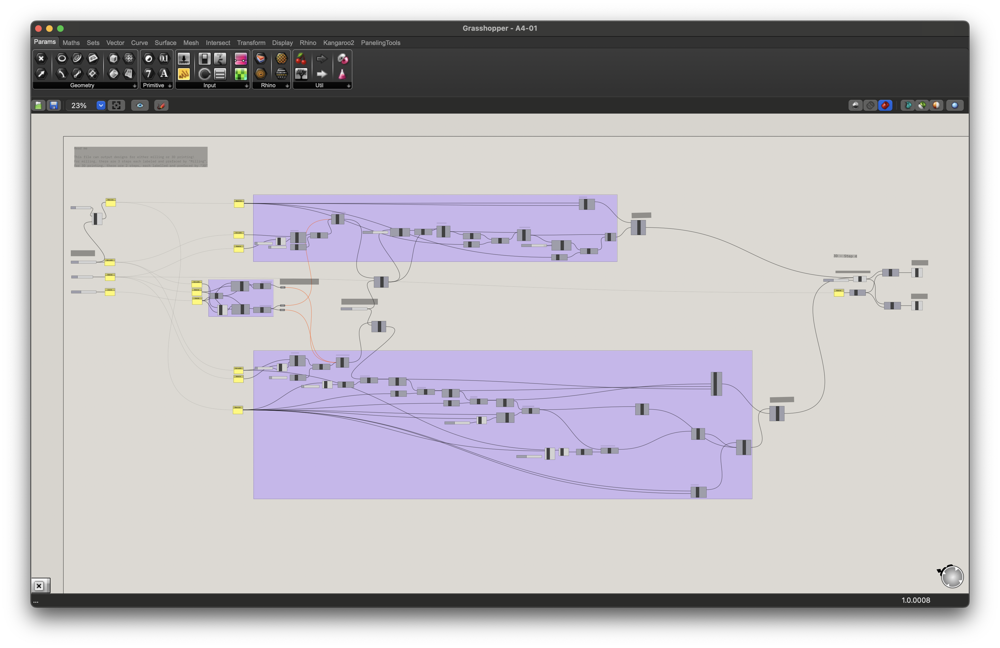
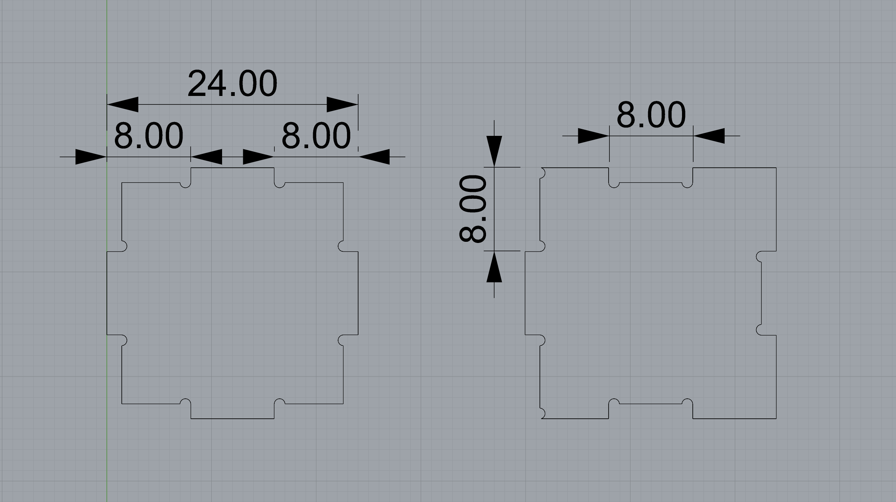
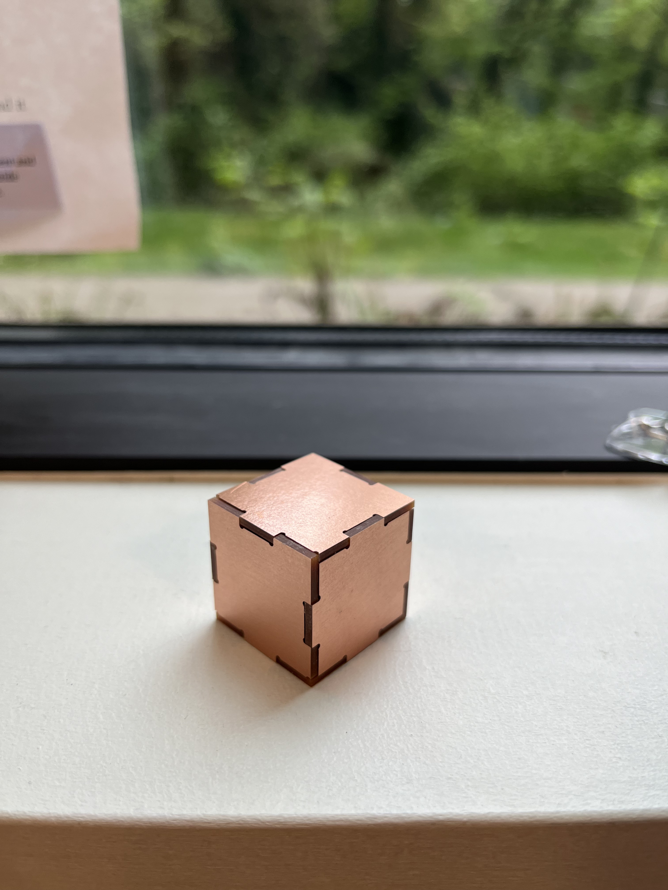

Planning and design
April 20th, 2024
When I assembled the second assignment I learnt I had to think about the order of assembly, especially when it came to fitting the last piece to an enclosed design. To make it easier to assemble the last piece, I made the top and bottom pieces fit down to the walls in one direction.

I constructed the design using Grasshopper so that I could adjust the offset threshold with a parameter instead of doing it manually in Rhino while on-site at the Mill.
 Milling
April 20th, 2024
The SVGs weren't working out so I switched over to loading the .dxf files to KiCad.
- Threshold offset: 0.02 mm
- Material thickness: 1.4 mm
KiCad settings:

Bantam settings:
Results:



3D printing
April 21st and 23rd, 2024
After successfully milling the cube, I modified the file slightly so it could also be used to 3D print the same cube.
- Threshold offset: mm
- Material thickness: 2mm but can be smaller or bigger
Some trial and error with the threshold and print settings.

{kind=link}
{kind=link}
{kind=link}
{kind=link}
{kind=link}
{kind=link}
{kind=link}
{kind=link}
{kind=link}
{kind=link}
{kind=link}
Sugar test. Not quite! A few granuals came out. When I measured the slots and gaps, the build didn't match the design. Played around with the different printing settings but I still encountered the same issues. Still thinking about it ...